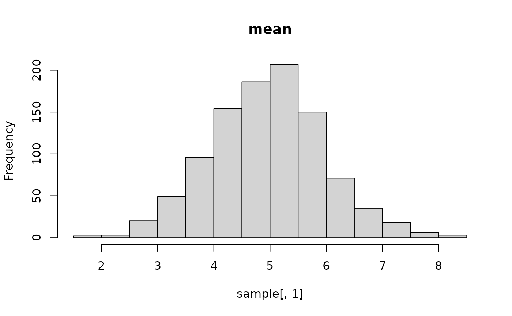
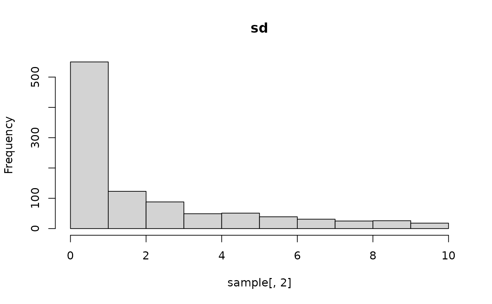
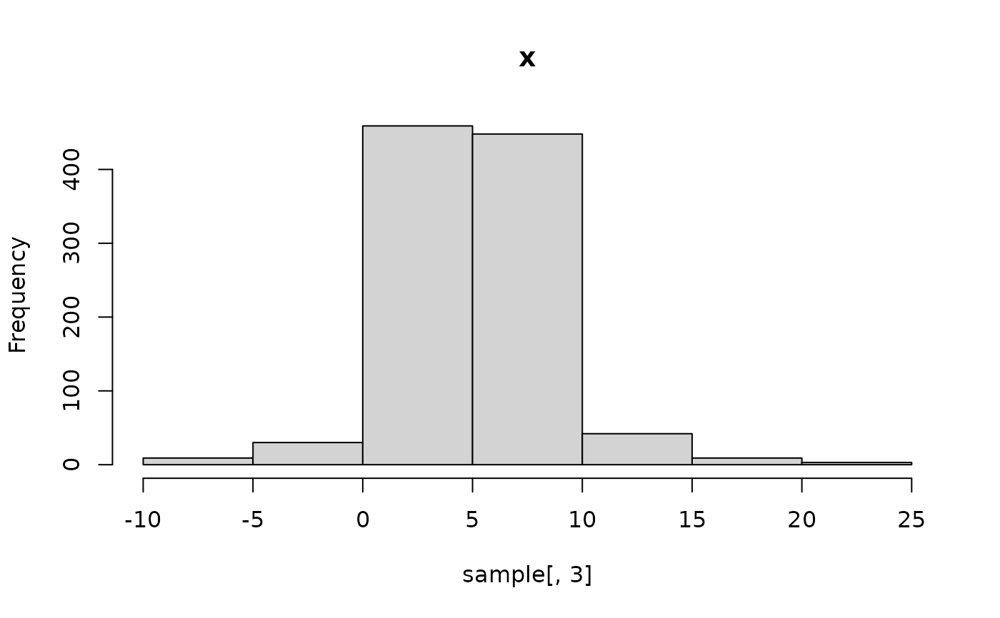

Creates a prior transformation object of class ernest_prior, which defines
how to map points from the unit hypercube to the parameter space for use in
a nested sampling run.
Usage
create_prior(
point_fn,
vectorized_fn,
names,
lower = -Inf,
upper = Inf,
repair = c("unique", "universal", "check_unique", "unique_quiet", "universal_quiet")
)
# S3 method for class 'ernest_prior'
x + yArguments
- point_fn, vectorized_fn
[function]
The prior transformation function. Provide eitherpoint_fnorvectorized_fn:point_fn: Should accept a single parameter vector (numeric vector of length equal to the number of parameters) and return a vector in the original parameter space.vectorized_fn: Should accept a matrix of points in the unit hypercube (rows as parameter vectors) and return a matrix of the same shape in the original parameter space.
- names
[character()]
Unique names for each variable in the prior distribution.- lower, upper
[double()]
Expected lower and upper bounds for the parameter vectors after transformation.- repair
[character(1)]
Name repair strategy fornames. One of"check_unique","unique","universal","unique_quiet", or"universal_quiet". Seevctrs::vec_as_names()for details.- x, y
[ernest_prior]
Prior objects to combine.
Value
[ernest_prior], an object describing the prior transformation,
with names, lower, and upper recycled to the same length.
Details
The prior transformation encodes points in the parameter space as independent and identically distributed points within a unit hypercube. Nested sampling implementations, including ernest, use this transformation to simplify likelihood-restricted prior sampling and avoid unnecessary rejection steps.
Provide your prior as a transformation function. For factorisable priors, this can simply transform each value in (0, 1) using the inverse CDF for each parameter. For more complex cases, you can specify hierarchical or conditionally dependent priors.
create_prior performs regularity checks on your prior function to catch
basic errors that may affect nested sampling. The function must take in a
vector (or matrix) of points (each between 0 and 1) and return a vector or
matrix of the same shape containing only finite values.
If your prior depends on additional data, provide these using an anonymous function (see Examples).
Note
See vctrs::vector_recycling_rules for information on how parameters are recycled to a common length.
See also
Other priors:
create_normal_prior()
Examples
# Specify a prior with independent marginals
normal <- create_normal_prior(
names = c("beta0", "beta1", "beta2"),
mean = 0,
sd = 5
)
uniform <- create_uniform_prior(names = "sd", lower = 0, upper = 5)
composite <- normal + uniform
composite
#> composite prior distribution with 4 dimensions (beta0, beta1, beta2, and sd)
# Propose a conditional (hierarchical) prior in vectorized form
fn <- function(x) {
n <- nrow(x)
out <- matrix(NA_real_, nrow = n, ncol = 3)
# x[1] follows N(5, 1)
out[, 1] <- stats::qnorm(x[, 1], mean = 5, sd = 1)
# log10(x[2]) follows Uniform(-1, 1)
out[, 2] <- 10^stats::qunif(x[, 2], min = -1, max = 1)
# x[3] follows N(x[1], x[2])
out[, 3] <- stats::qnorm(x[, 3], mean = out[, 1], sd = out[, 2])
out
}
conditional_prior <- create_prior(
vectorized_fn = fn,
names = c("mean", "sd", "x"),
lower = c(-Inf, 0, -Inf)
)
# Plot the marginals
sample <- conditional_prior$fn(matrix(runif(1000 * 3), nrow = 1000))
hist(sample[, 1], main = "mean")

hist(sample[, 2], main = "sd")

hist(sample[, 3], main = "x")
